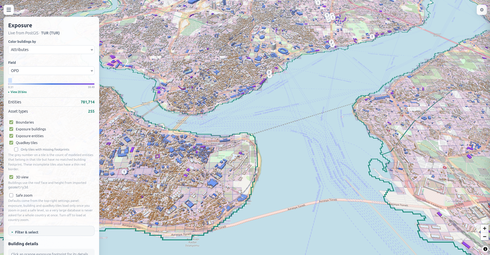
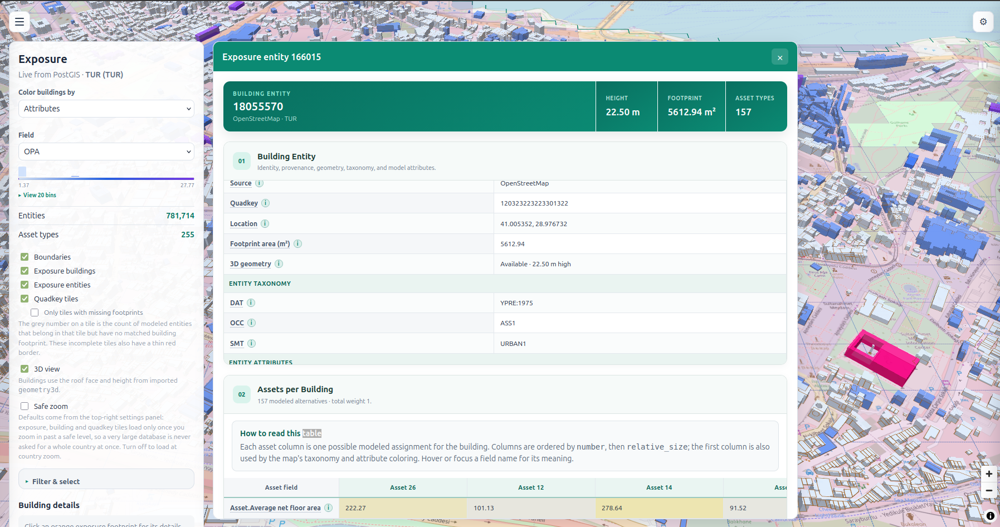
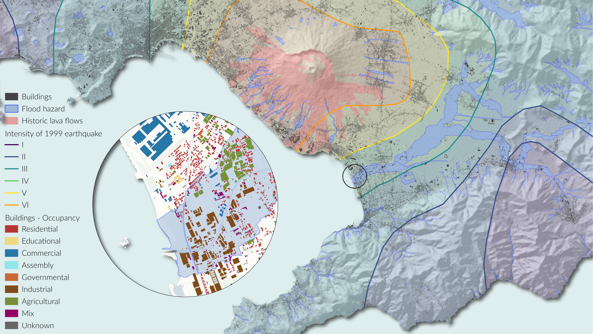

Tools that use the model.
Explore the model in a browser, inspect buildings in QGIS, and estimate earthquake consequences. All open source.

OXM Web
A read-only dashboard for exposure maps, building records, district summaries, and earthquake-risk scenarios. Prepared stories link taxonomy, exposure, vulnerability, hazard, and risk. Reads a prepared PostGIS database.

OXM Building Plugin
Inspect building exposure inside a QGIS project. Select a footprint and read the exposure data for that building from a connected GDE PostGIS database. Needs QGIS 3.x and Python 3.11+.

OXM Loss Calculator
Combine an exposure model, a ground-motion field, and fragility or vulnerability functions to estimate earthquake damage-state probabilities, structural loss, and fatalities. Flood and cumulative loss are not covered.
The tools around the products.
OXM Mini runs source preparation and model runs. OXM Example holds the local study configuration. Exposure Share makes results portable. Document extraction brings new evidence into review.